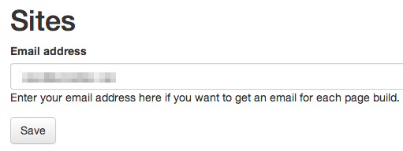
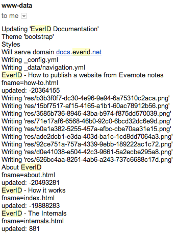

- dispatch.php for routing and overall structure
- idiorm to access an SQlite database
- client libraries for both Evernote and Github to access there APIs
- an SQlite database to store the information entered on https://everid.net for account and site configuration
Routing
The sole entry point into the site is the file index.php. From here, the various resources are dispatched:
- / - The site’s landing page
- /webhook - Called by Evernote when an update to a registered notebook has to be processed
- /user - Editing a user’s property and sites
- /auth - Authenticating against Evernote
- /github - Authenticating against Github
- /contact - A small contact form
Authentication
Authentication on EverID is via the Evernote service. A single Evernote user may register multiple sites to be rendered from an Evernote notebook.
Rendering
Rendering happens in the file update.php and is triggered by a call to the endpoint /webhook. Evernote passes a set of parameters when calling this address:
From these parameters the owner and site to be rendered are retrieved and fed to the function update() which does the actual rendering to Github.
First, a connection to the Github API is established, using the Github authentication token, username and repository name as parameters. Then, if necessary, a branch gh-pages is created.
Next, another remote connection is established, this time to the Evernote API, and the list of notebooks for the authenticated Evernote user is traversed. Once the notebook with the matching notebookGuid is found, some house-keeping is done for creating the necessary site blueprint for a
Jekyll site at Github:
- Check, and - if necessary - create directories
- Create a directory for design (=theme) files
- Create files for the general page layout and CSS styles
- If requested, create the CNAME file for a custom domain
- Extract the configuration and navigation items from the site outline
Then, the notes in the notebook are traversed. The page address of each note is determined either from the sourceURL or a tag with the prefix „url:" or „url=" . This is so that notes entered on the Evernote mobile client can also be rendered, where this client does not offer a sourceURL field.
Next, images are extracted from the note and written to Github.
Finally, the HTML of the note is rendered, prefixed by a preamble with title, layout name, tag list, and list of resources (i.e. images or attachments). During rendering, image references are replaced with proper HTML tags.
To check the rendering, you can leave your email address on the site

... and get a log of the rendering steps. Please make sure to check your spam folder as well. I have not yet had time to properly set all the email headers.
